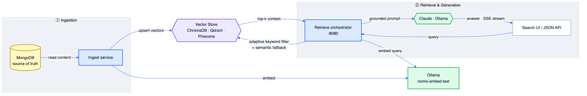

A high-performance, production-minded RAG engine that shifts retrieval intelligence to the orchestration layer — no schema migrations, no intrusive re-indexing, and equal precision on short keyword lookups and abstract semantic queries.
Out-of-the-box RAG pipelines force schema migrations, intrusive backend re-indexing, and complex prompt engineering on end-users. OmniRAG isolates the database layer from the AI retrieval logic — treating your primary database (MongoDB) as the source of truth, while document-aware routing and conditional fallback inside the vector layer drive deterministic accuracy.
Short single-token queries trigger keyword-sensitive filtering (Chroma where_document, Qdrant payload text match); abstract queries route to dense semantic search.
Filtered searches that return zero documents transparently retry as pure semantic vector search — no dead-ends, no empty answers.
Routes generation to Anthropic Claude or local Ollama based on config, with a credit-balance guard for clean, automatic fallback.
Your transactional store stays the source of truth. The vector layer is an additive retrieval index, not a migration target.
The Pinecone pipeline serves a Server-Sent Events (SSE) API, streaming both ingestion progress and generated answers live to the UI.
Seed, ingest, and retrieve run as independent Go services — clean separation of storage, embedding, and orchestration concerns.
Each module proves the same orchestration pattern against a different class of vector store — from frictionless local prototyping to managed serverless and full PDF/book ingestion.
The flagship implementation. Go orchestration over MongoDB source data with Ollama embeddings, serving a browser search UI. Applies keyword-sensitive where_document filtering for short queries and retries without filters when results come back empty.
A highly decoupled microservices pipeline separating primary content storage from specialized vector search. Applies payload text filtering against the content field, then falls back to semantic vector search — leaning on Qdrant's in-graph filtering for low p99 latency.
Extends the pattern to full PDF/book content. Stores raw PDFs in MongoDB GridFS, extracts text page-by-page, chunks with LangChainGo, embeds concurrently via Ollama, and upserts to Pinecone — streaming live ingestion and answer generation over SSE with a credit-balance guard.
Browse pinecone-rag →The modular starting point — a clean ingest/retrieve microservices split using MongoDB itself as the knowledge store, with local Ollama embeddings, Claude/Ollama generation, and configurable Prose / Table / JSON output formatting.
Browse mongo-rag-beginner →Retrieval intelligence lives in Go, not in the database. A single endpoint handles embedding, adaptive filtering, fallback, context assembly, and grounded generation.

// POST /api/query → retrieve/main.go 1. Parse request { "query": "...", "format": "prose|table|json" } 2. Embed query Ollama /api/embed · model: nomic-embed-text 3. Adaptive filter short single-token → keyword/where_document filter abstract/semantic → dense vector search 4. Fallback filtered result empty → retry as pure semantic 5. Assemble context merge top results into one grounded block 6. Generate route → Claude | Ollama (Gemma) credit-balance guard → clean fallback 7. Stream answer Server-Sent Events → UI
Seed services load policy/source content into MongoDB. Ingest services read it back, generate embeddings through Ollama, and upsert vectors + payloads into the chosen store with cosine-space HNSW indexes (or page-by-page PDF chunks for Pinecone).
A Go HTTP server embeds the incoming query, runs adaptive filtered-or-semantic search, builds a grounded prompt in the requested output format, and routes generation to Claude or local Ollama — all behind a clean web UI and JSON API.
A deliberately Go-centric stack spanning transactional storage, four vector engines, local + hosted LLMs, and streaming delivery.
OmniRAG is evolving from a single-node retrieval pipeline into a distributed, multi-agent framework.
Go + ChromaDB metadata optimization layer, fixing short-query vector bias.
Abstracted multi-vector-DB client interface supporting Qdrant and Milvus.
Horizontally scalable ingestion worker pools for heavy concurrent document parsing.
LangChain & LangGraph integration for autonomous, stateful multi-agent workflows and graph-based context retrieval.
Full source, per-module READMEs, data-flow diagrams, and a vector-database decision matrix covering 13+ engines live in the repository.